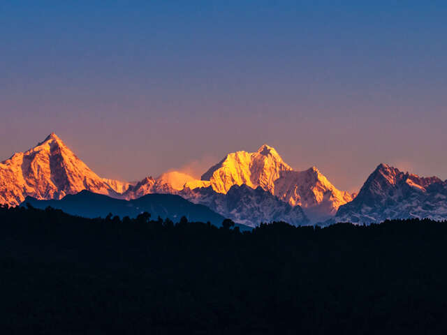
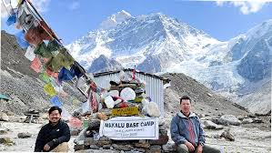
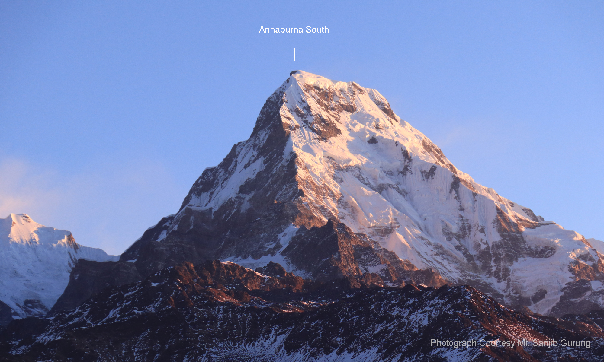

Famous Mountains & Peaks

Mount Everest (Sagarmatha)
Elevation: 8,848.86 m (29,031.7 ft)The world's highest peak, known as "Sagarmatha" in Nepali and "Chomolungma" in Tibetan. First conquered by Sir Edmund Hillary and Tenzing Norgay in 1953.
Learn more
Kanchenjunga
Elevation: 8,586 m (28,169 ft)The third highest mountain in the world, located on the border of Nepal and India. Its name means "Five Treasures of Snow" referring to its five peaks.
Learn more
Lhotse
Elevation: 8,516 m (27,940 ft)Connected to Everest via the South Col, Lhotse is the fourth highest mountain in the world. Its name means "South Peak" in Tibetan.
Learn more
Makalu
Elevation: 8,485 m (27,838 ft)The fifth highest mountain in the world, known for its pyramid shape. One of the most challenging 8000m peaks to climb due to its steep pitches and knife-edge ridges.
Learn more
Annapurna
Elevation: 8,091 m (26,545 ft)A massif with multiple peaks, Annapurna I is the 10th highest in the world. The name means "Goddess of Harvests" and its circuit trek is one of the most popular in Nepal.
Learn more
Ama Dablam
Elevation: 6,812 m (22,349 ft)Known as the "Matterhorn of the Himalayas" for its distinctive shape. The name means "Mother's necklace" and is one of the most aesthetically pleasing mountains.
Learn more